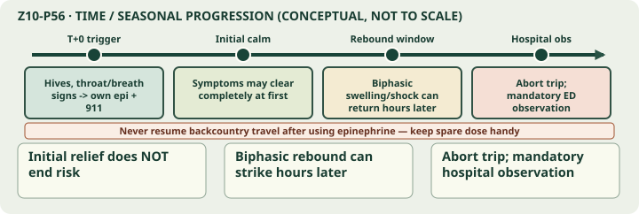

Z10-P56 · Wilderness medicine · New manuscript
Guard against rebound (biphasic) anaphylaxis after initial improvement
Ensure every person treated for anaphylaxis reaches hospital observation even when symptoms seem to vanish completely.
When it applies · Any patient who experienced systemic allergic symptoms or used a prescribed epinephrine auto-injector outdoors.
Equipment · Written timeline log, remaining prescribed spare auto-injector if carried, shelter, and evacuation transport.

Actions
- Understand that anaphylaxis can rebound hours later ("biphasic reaction") with renewed airway swelling and shock even after initial epinephrine completely resolves hives and wheezing.[M08]
- Cancel the remainder of the outing immediately and transport or evacuate the patient to an emergency department for clinical observation and follow-up care—never resume remote backcountry travel after an anaphylactic event.[M08, T02]
- Keep the patient resting calmly with continuous buddy monitoring during exit, keeping their spare prescribed auto-injector immediately accessible rather than buried in a pack.[M08, M20]
Failure recognition · Continuing deeper into the wilderness after a bee-sting auto-injector clears throat tightness, then experiencing a fatal rebound six hours later without backup doses.[M08]
Verify · Confirm exact trigger, dose time, symptom resolution timeline, and direct evacuation route to a hospital are active.[M08, M20]
Stop or change course · Any returning throat tightness, hives, wheezing, or lightheadedness during evacuation triggers immediate 911 update and follow-up per prescribed device/dispatcher guidance.[M08, T02]
Evidence and editorial notes
- M08 · AHA and American Red Cross · 2024 Guidelines for First Aid (2024)
- Section: Anaphylaxis · Conditions: Suspected severe allergic reaction; community first aid; prescribed epinephrine or applicable local protocol
Support: Activate EMS promptly and assist with epinephrine under the relevant device or action plan. Follow professional direction for subsequent care.
Limitations: Pediatric device selection, subsequent dose, timing and transfer require product, patient and local protocol. · Conflicting evidence: See A02 claim audit for boundaries.
Editorial note: Separates assisting with a patient's prescribed auto-injector from lay prescribing. · Specialist reviewer: Allergy/immunology and EMS
Primary source · checked 2026-11-25 - M20 · NIH / MedlinePlus · First Aid Overview (current web edition)
- Section: Lay First-Aid Scope, Kit Readiness, and Documentation · Conditions: Pre-trip kit preparation and remote patient monitoring
Support: Maintain an inspected, unexpired first-aid kit matched to your actual training, keep written patient observations (time, responsiveness, breathing, symptoms, interventions) for EMS handoff, and practice skills in certified courses.
Limitations: Carrying advanced medical instruments without clinical training adds risk rather than capability. · Conflicting evidence: None; aligns with ARC and NPS-K.
Editorial note: Anchors kit sizing, SOAP-style lay observation logs, and scope-of-practice cards. · Specialist reviewer: Wilderness EMS and clinical education
Primary source · checked 2026-11-24 - T02 · American Red Cross · First Aid Steps (current web edition)
- Section: First Aid Steps > Call 9-1-1 · Conditions: Lay emergency response to unresponsiveness, abnormal breathing or severe bleeding
Support: Activate EMS and get needed equipment. Follow dispatcher directions and act within training.
Limitations: Remote locations may delay EMS arrival, requiring sustained stabilization after activation. · Conflicting evidence: None; aligns with NPS-E.
Editorial note: Mandates early emergency activation and dispatcher adherence. · Specialist reviewer: EMS and wilderness medicine
Primary source · checked 2026-11-24
Source lineage · NIH MedlinePlus Anaphylaxis; new manuscript · Classification · New manuscript.